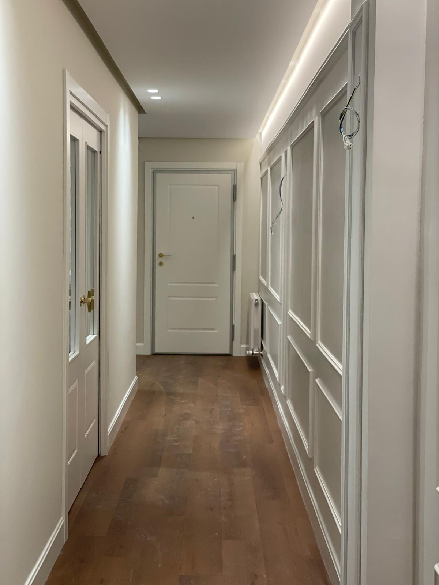
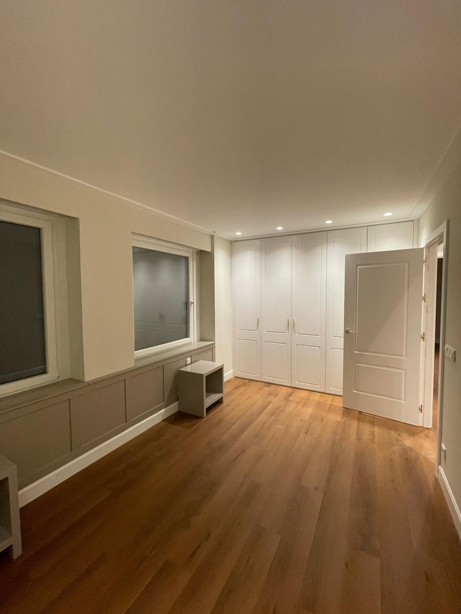
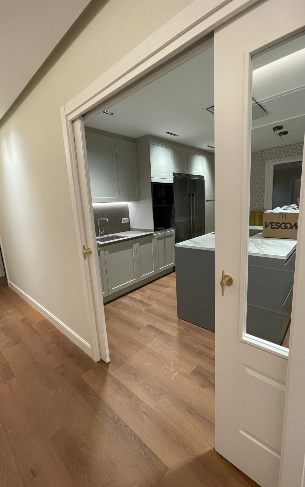
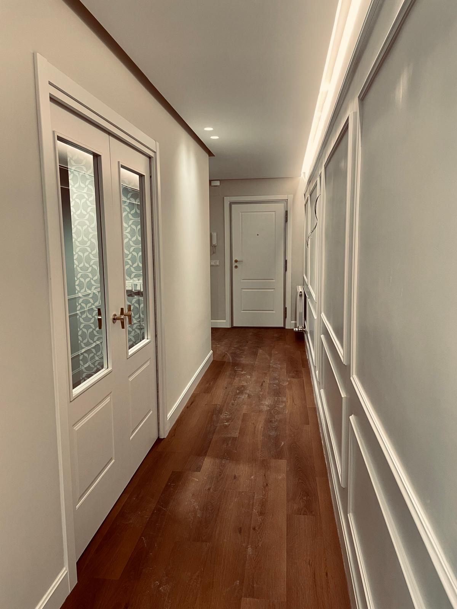
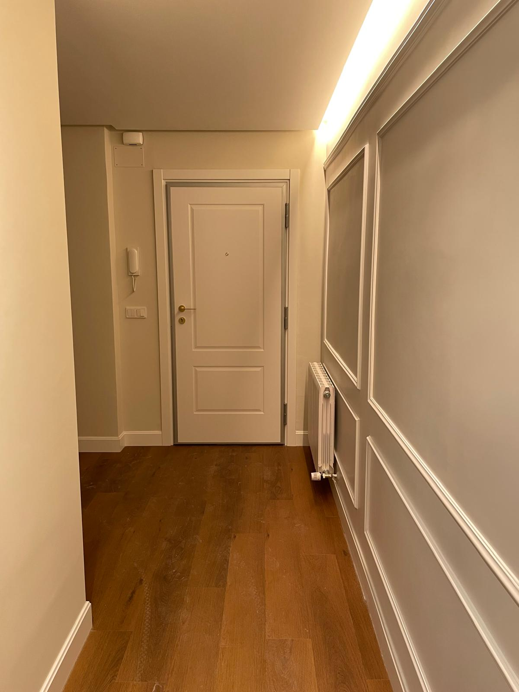
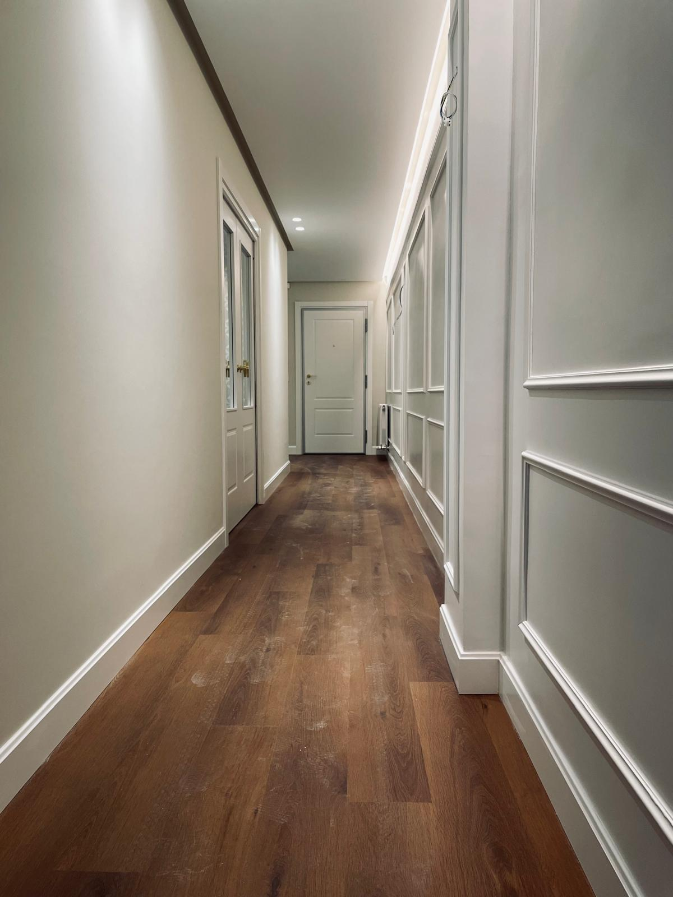
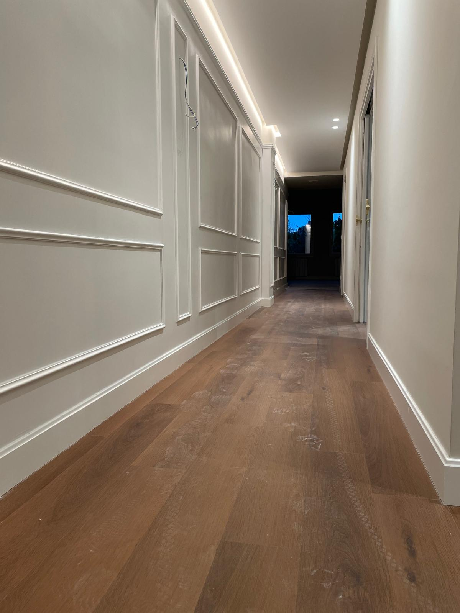
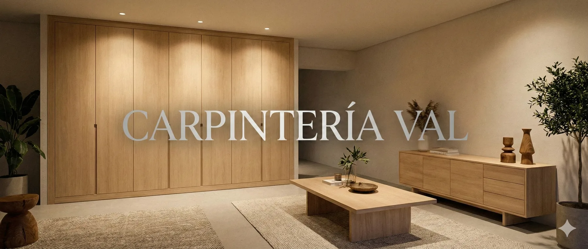

Muebles a medida
Diseño y fabricación para salones, dormitorios y oficinas. Medidas, materiales y acabados adaptados a tu espacio.
Hablemos de tu muebleCARPINTERÍA EN DONOSTIA / SAN SEBASTIÁN
Muebles que encajan contigo. Trabajamos la madera para dar forma a espacios prácticos, cálidos y hechos para durar.

01 / LO QUE HACEMOS
De un rincón por aprovechar a una estancia que quieres renovar. Encontramos la forma de hacerlo tuyo.
Diseño y fabricación para salones, dormitorios y oficinas. Medidas, materiales y acabados adaptados a tu espacio.
Hablemos de tu muebleInteriores prácticos y puertas que encajan con tu casa. Aprovechamos el espacio para que cada cosa tenga su sitio.
Dale espacio a tus ideasPuertas interiores y soluciones correderas que conectan estancias y aportan continuidad a los acabados de tu hogar.
Descubre los detallesInstalación de tarima flotante, suelos vinílicos y restauración de parquet. La base para un espacio más cálido.
Cuéntanos qué necesitas02 / TRABAJOS REALIZADOS
Una selección de nuestros trabajos de carpintería. Abre las fotografías para ver los acabados más de cerca.







La madera es el punto de partida.
Tu forma de vivir, la inspiración.
03 / EL OFICIO
Somos Carpintería Alex Val, en el barrio de Egia, Donostia. Llevamos más de 20 años transformando ideas en muebles únicos y funcionales.
Desde pequeñas reparaciones hasta proyectos de carpintería para renovar tu hogar, trabajamos con atención a los materiales, al uso y a los acabados.
Conversemos sobre tu idea04 / EMPEZAMOS POR UNA CONVERSACIÓN
Cuéntanos qué necesitas. Si tienes fotos del espacio, medidas o alguna referencia, puedes compartirlas por WhatsApp.
Hablemos por WhatsApp